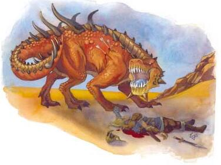

尖刺无翼龙（FELLDRAKE,
SPIKED）
大型龙类

生命骰：6d12+12 (51 hp)
先攻:+2
速度:40英尺(8格)
防御等级:19(-1体型,+2敏捷,+8天生),接触11,措手不及17
基础攻击/擒抱:+6/+15
攻击:啮咬+10近战(2d6+5)
全攻击:啮咬+10近战(2d6+5)和2爪抓+5近战(1d8+2);或刺+7远程(1d8+5)
空间/触及:10 ft./5 ft.
特性:黑暗视觉60英尺,免疫魔法的睡眠效果和麻痹,微光视觉, 灵敏嗅觉
豁免:强韧+7,反射+7,意志+8
属性:力量20,敏捷14,体质15,智力10,感知12,魅力8
技能:攀爬+14,威吓+8,聆听+12,搜索+9,侦察+12,生存+10
专长:警觉,钢铁意志,近程射击
环境:温带平原
组织:独居或一窝(2-4)
挑战等级:4
财宝:无
阵营:总是中立善良
成长:7-9生命骰(大型); 10-18生命骰(超大型)
等级调整:+2
这种无翼龙把它们的源头追溯到白金龙巴哈姆特。在帮助一群强大的精灵法师击退恶魔的入侵之后，巴哈姆特创造出这种无翼龙来守卫精灵，抵御未来的入侵。所有无翼龙的血管里都有巴哈姆特的血，而它们的心里都有暴躁、忠诚和善良。
在多种无翼龙中，极少有像尖刺无翼龙这样强大的。它的体型和力量使它置身于重要战斗的前线，一些强大的骑士或圣武士用尖刺无翼龙作为坐骑。
无翼龙说龙语和木族语。
战斗
尖刺无翼龙能勇敢地面对可怕的毒打，同时用刀剑般的爪子给予充分的回报。它尾巴上的刺不只是为了炫耀―它能把它们射向附近的敌人，形成一阵致命的火雨。凭借它的嗅觉和视觉能力，尖刺无翼龙甚至能够可靠地发现隐藏的敌人。
作为特殊坐骑的尖刺无翼龙
根据DM的选择，11级以上的圣武士能够召唤尖刺无翼龙作为她的特殊坐骑。用于坐骑的额外生命骰、天生护甲、力量调整、智力值和特殊能力时，圣武士的等级视为比实际低6级。